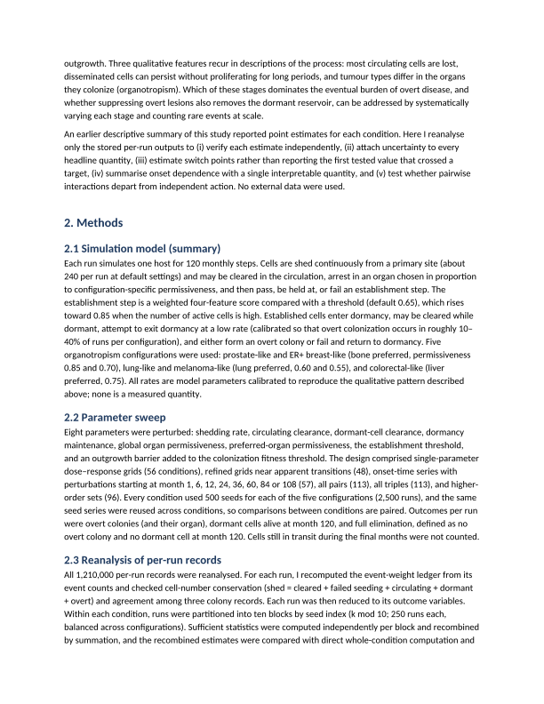
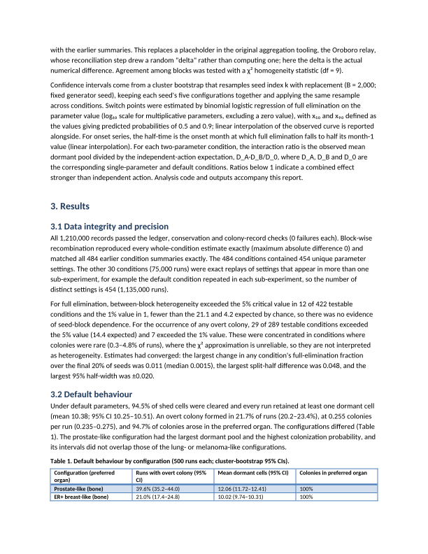
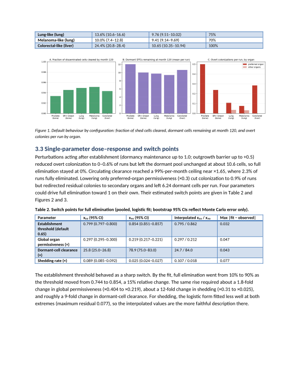
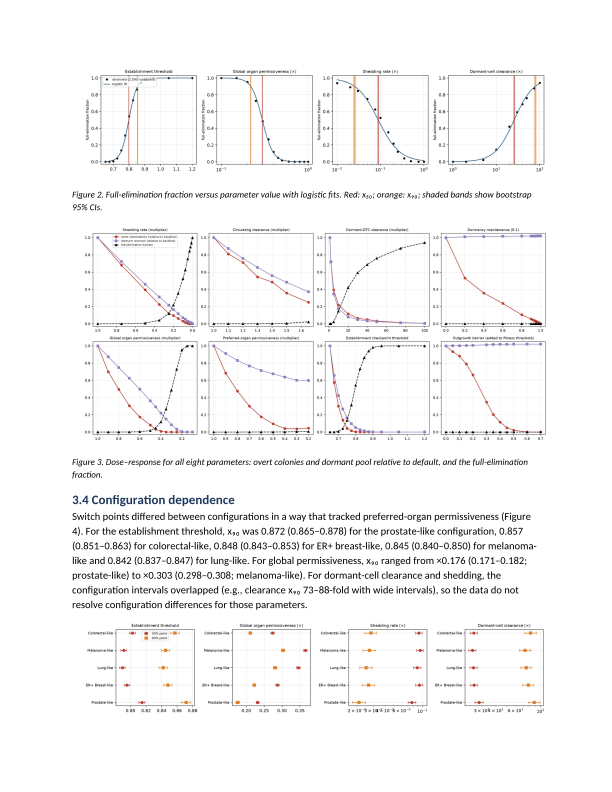
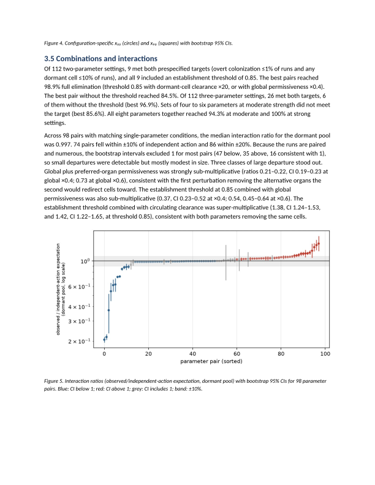
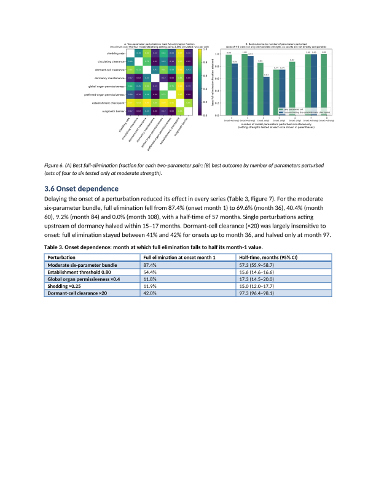
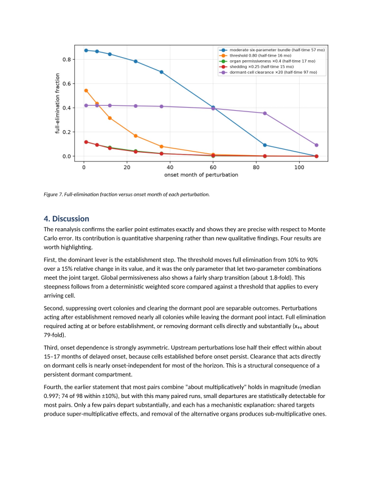
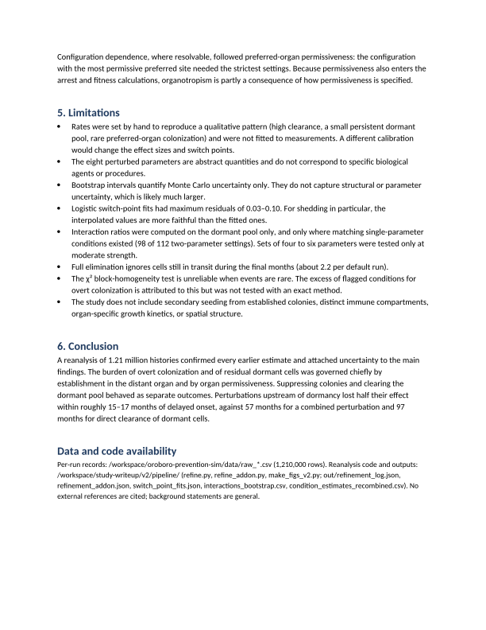

Speculative in-silico modeling only. No clinical, medical or engineering claims.
Page-image view of the PDF. The PDF/Word binaries stay on the project computer; the connected GitHub interface stores text files only. This study predates the native, integrated Oroboro pipeline; see Oroboro/research/metastasis-native.







